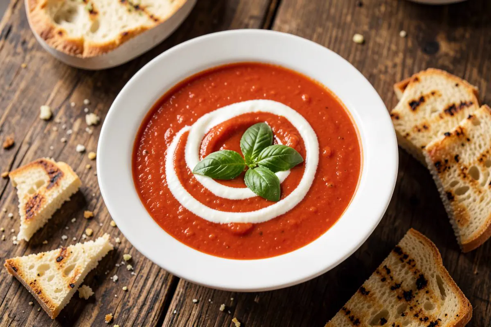

Gourmet Roasted Creamy Tomato Soup

Illustrative image.
Tomato soup from a carton is a different food from this. Whole peeled tomatoes, softened onion, a lot of garlic and a modest amount of cream produce a soup with real acidity and depth, and it takes about thirty-five minutes including simmering.
The soup is blended until smooth, though you can leave it slightly coarse if you prefer texture. It serves four as a main with bread and cheese, or six as a starter.
Ingredients
- 2 tbsp olive oil
- 1 medium yellow onion, chopped
- 4 cloves garlic, minced
- 2 cans (28 oz each) whole peeled San Marzano tomatoes
- 2 cups vegetable or chicken broth
- 1/2 cup heavy whipping cream
- 1/4 cup fresh basil leaves, packed
- Salt, pepper, and a pinch of sugar to taste
Instructions
- Heat olive oil in a large pot or Dutch oven over medium heat. Add the chopped onion and sauté for 5 minutes until soft and translucent. Add minced garlic and cook for 1 more minute.
- Pour in the whole peeled tomatoes (along with their juices) and the broth. Break up the tomatoes slightly with a wooden spoon. Bring the mixture to a boil, then lower heat and simmer uncovered for 15 minutes.
- Remove the pot from the heat. Stir in the fresh basil leaves.
- Use an immersion blender directly inside the pot to blend the soup until entirely velvety smooth. (Alternatively, transfer carefully to a standalone blender in batches).
- Return to low heat, pour in the heavy cream, stir well, and season with salt, pepper, and a pinch of sugar to round out the acidity. Serve warm alongside grilled cheese!
Why this recipe works
San Marzano tomatoes are sweeter and less acidic than many supermarket tinned tomatoes, which means less sugar is needed to balance the soup. A pinch of sugar is still worth adding, and blending while hot gives a smoother, glossier result than blending cold.
Tips for success
- Cook the onion slowly until soft and sweet before adding the garlic; this is where most of the flavour comes from.
- Crush the tomatoes by hand or with a spoon so they break down faster and do not spit.
- Blend in batches and vent the lid, or the heat will build pressure and blow the top off.
Substitutions that work
- Crushed tomatoes work if you do not have whole peeled ones, though the texture will be slightly thicker.
- For a dairy-free soup, replace the cream with full-fat coconut milk or a spoonful of cashew cream.
- Roast the tomatoes and garlic at 425 F for twenty minutes first for a deeper, sweeter flavour.
Storage and make-ahead
Refrigerate for four days or freeze for three months. Reheat gently on the stove and adjust the seasoning, since the soup thickens and tastes less salty after chilling. Add a splash of water or broth if it is too thick.
Serving suggestions
Serve with grilled cheese, garlic bread or a swirl of cream and torn basil. A little parmesan rind simmered in the pot adds savoury depth if you have one.
Frequently asked questions
Why does my tomato soup taste acidic?
Tinned tomatoes vary in acidity. A pinch of sugar, a little more cream or a small piece of parmesan rind simmered in the soup will round it out.
Can I make this soup without cream?
Yes. Blend in a cooked potato or a handful of cashews for body, or simply leave the soup as a clear tomato broth with a drizzle of olive oil.
Can I use fresh tomatoes?
Yes, in season. Core and halve about three pounds of ripe tomatoes, roast them with the garlic first, and add a little tomato paste to deepen the colour.